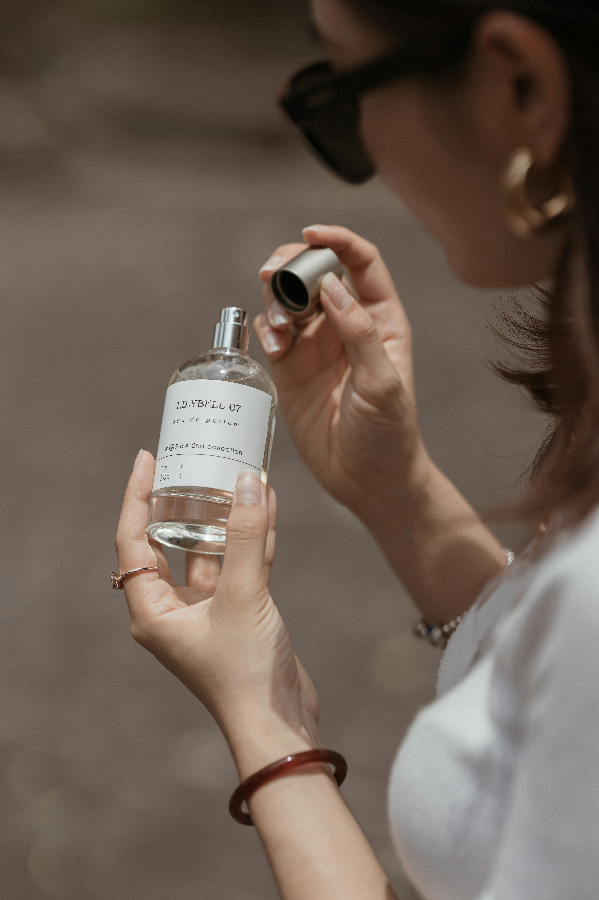
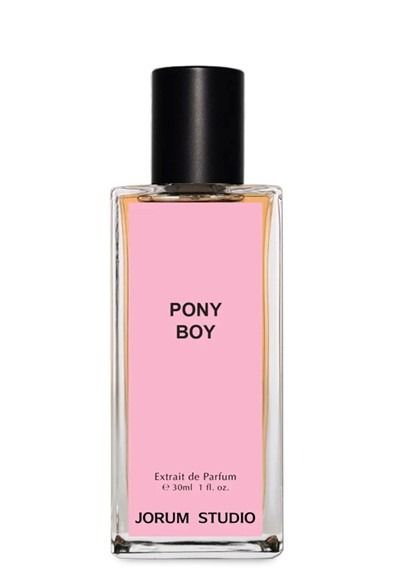
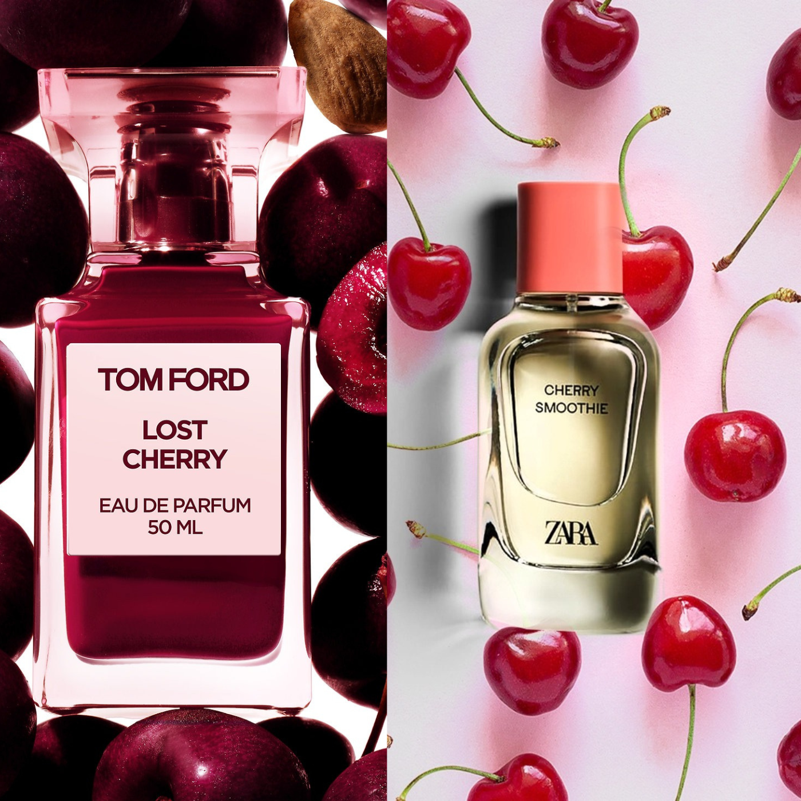

Choosing a Fragrance

There are several things that I consider when choosing a fragrance:
1. What time of year is it? Is it the winter or summer season?
I tend to like strong gourmands with a powerful projection, but these will not be suitable for the summer or the late spring.
People will often choose to rotate out different scents according to the season so that they aren't wearing a scent that is too weak for cold
winter months or too overpowering for a hot humid day.
2. What types of notes are you drawn to?
Are you drawn to gourmands? Do you like smelling like a photorealistic cake or are you simply
drawn to warm vanillas? Are you interested in florals? Does a orange blossom, white musk, or rose draw you in the most?
3. How long do you want your scent to last? How much projection?
It is important to try the scent on your actual skin. Our individual skin chemistry
changes the way a fragrance will smell, what notes pull forward more than others, and how much projection it might have.
My Fragrance Wishlist

I have a long list of fragrances that I have been eyeing. So far I want to try some indie brands, particularly from brands like Sorce, who rotate their scents
according to the season. Right now I want to try their scent Snow Moon Magic, A Party, Or Something, and In Dreams and Fairy Tales.
Snow Moon Magic
a "gets extra cozy for winter with the addition of fluffy marshmallow, a house tincture of Tahitian vanilla beans, and gooey cookie butter,
Notes: Lavender sugar, vanilla steamed milk, chai spices, tonka bean, Cashmeran, Ambroxan, crystals charged by the moonlight (our crystal accord), marshmallow, cookie butter, and Tahitian vanilla.
Category: Gourmand"
Party, Or Something
"This perfume is the life of the party: a rich yellow cake gourmand with pistachio buttercream and creamy white chocolate is complemented by bright, natural South African tagetes oil and a maximum dose of fuzzy Cashmeran (think cashmere, in scent form). It's cozy, fun, and addictive.
Notes: Yellow cake, white chocolate, pistachio buttercream, South African tagetes, fuzzy Cashmeran, and Iso E Super
Category: Floral Gourmand"
In Dreams and Fairy Tales
"Based on the scent of French meringue served at a Parisian salon de thé, In Dreams and Fairy Tales is an airy, slightly toasted cloud of vanilla and powdered sugar with a sprinkle of chamomile. This is my perfect, fluffy, all-seasons vanilla that makes me feel like I stepped into a fairy tale. It is beautiful on its own, and layers perfectly as a vanilla base for any scent.
And because half of the fun of eating meringues is trying all of the flavors, we paired some of our fan-favorite gourmand accords with the vanilla base - choose from vanilla, pistachio, strawberry rosewater, blueberry, or passionfruit, or try them all with our discovery set!
Notes: Baked meringue, vanilla bean absolute, sugar, a sprinkle of chamomile
Choose from: vanilla, pistachio, strawberry rosewater, blueberry, or passionfruit
Category: Gourmand"
All About Dupes

When an expensive item is shared online it is often followed by the commont "drop the dupe." In the fashion world and fragrance world alike, the market is
flooded with products that are similar (if not the exact same) to the original designer product. In the fragrance world, these dupes are also known as "fragrance clones",
and are meant to make fragrances with exciting combinations of notes to be more accessible.
The downside is that sometimes these fragrance clones are made with
lower quality and often times the dupes need to be reapplied more frequently, as they tend to lack longevity. There is also the fact that dupes operate in a legal
"grey area" as they are replicating designer perfumes without permission.
Legally, one can sell a scent that is similar as long as it does not have the exact same composition as that
could be considered infrigement. Furthermore, it would be difficult to enforce trademarking on scents and could potentially harm the indie fragrance market.
Something important to consider when purchasing a fragrance clone is where it is coming from. Who is the seller and how is the dupe being made?